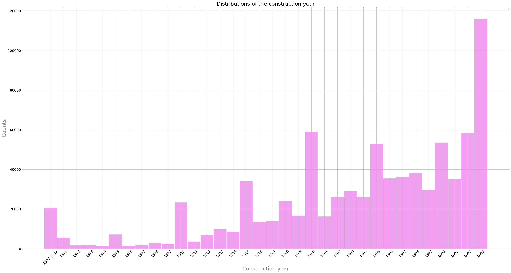
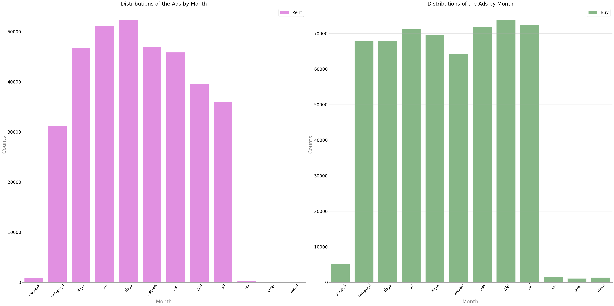
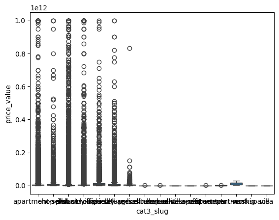
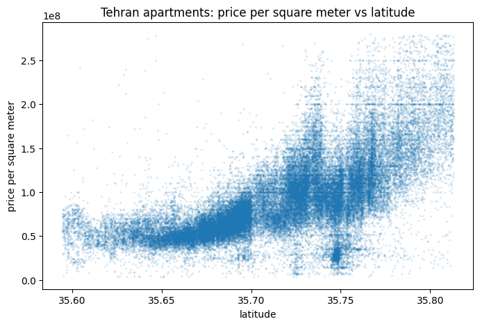
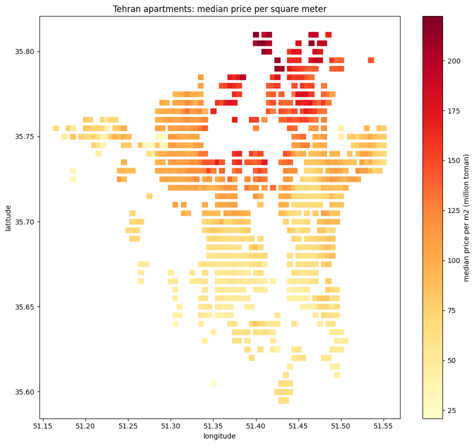
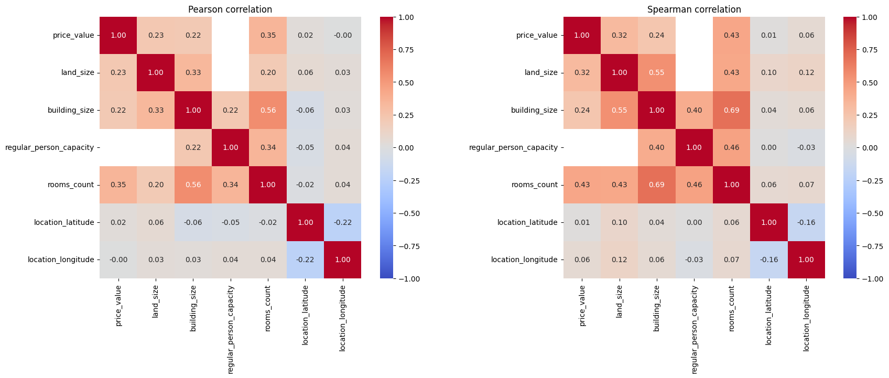
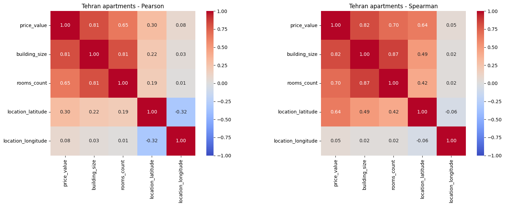
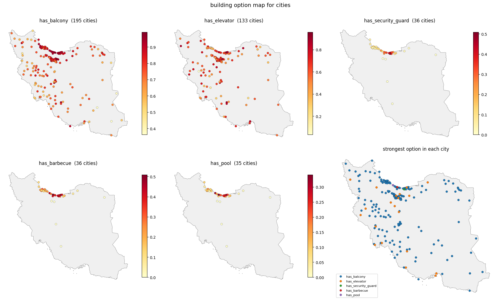

Descriptive statistics
Nine questions that describe the market: what is listed, when it was built, when it is posted, what it costs, where it is, and which features go together. Use the controls on each chart to change the view.
How are listings split across categories?
Category counts at level 2 (deal type) and level 3 (property type).
What we found
- 83% of ads are residential. The dataset is mostly residential with a small commercial part.
- Residential sale ads are about twice residential rent ads (55.9% vs 27.7%). Across all deal types, sale ads outnumber rent ads 1.6 : 1.
- A few large level-3 categories are followed by a long tail. apartment-sell is 30.3% of the data and workspace only 0.05%. Switch to the log scale to see the tail.
- The bars are horizontal because the category names are long.
When were the listed buildings built?
Histogram of construction_year, after converting Persian digits to numbers.

- "Before 1370" combines many years into one bar, so it is taller than the bars next to it. It should not be read as a single year.
- The tallest bar is 1403. A large part of supply is new-build or pre-sale, and some users may have picked the current year instead of the real one.
- Round years (1380, 1385, 1390, 1395, 1400) have clear spikes. This heaping means build year carries roughly ±2 years of uncertainty.
- Older buildings appear less often because they have been rebuilt or are listed less.
Is there a season for listing?
Number of rent and sale ads per Jalali month. Each month is mapped from the first day of its Gregorian month.
Rent ads per month
Months with fewer than 1,000 ads are drawn in grey. Their low counts come from gaps in data coverage, not from market behaviour.
What we found
- Rent has a clear summer peak. It climbs from 31k ads in Ordibehesht to over 52k in Tir and Mordad, then falls back to 36k by Azar. This is the summer moving season: schools close and leases end.
- Sale ads are roughly flat at 64–74k per month, with a small dip in Shahrivar and a peak in Aban.
- Rent supply is seasonal. Sale supply is not.

How are sale prices distributed by property type?
A box plot on a linear axis cannot be read: a handful of typos pull the axis out to 1014 Toman.
Data quality of price_value
Zero-price ads by type
"Negotiable" ads are mostly villas and apartments.

Where are the listings?
655,608 ads have coordinates. The interactive heatmap is on the maps page.
Top cities by number of ads
What we found
- Listings are not spread evenly. They concentrate in Tehran and the cities around it, then Mashhad, Karaj, Shiraz and Isfahan.
- Tehran alone has 190,904 ads (19% of the data).
- The neighbourhood with the most ads is Elahiyeh Blvd in Mashhad (7,076 ads), so there are hot spots inside cities as well.
How does rent move from month to month?
The first version averaged raw rent_value, which goes up to 1015 Toman, so the trend meant nothing. We rebuilt it.
How the rebuilt trend works
- Only residential rent with rent > 0 (zero rent means full deposit, "rahn-e kamel").
- Outliers removed with the IQR fence on log(rent).
- Months plotted in time order with Jalali labels, and mean and median shown side by side.
- Months with fewer than 1,000 ads are drawn hollow because they have too few ads for a stable average.
- Rent and deposit are traded against each other, so we also plot equivalent rent: following the project brief, 1 million Toman of deposit equals 30 thousand Toman of monthly rent.
Equivalent-rent calculator
The conversion behind the equivalent-rent trend. Change the deposit / rent split of a listing.
Nominal vs real prices, 1400 – 1403
Real price = nominal × CPIbase / CPIyear. The first version mapped CPI onto the row number instead of the year, so every real price came out NaN. This part was rewritten.
Consumer price index used
| Year | CPI | YoY inflation | × vs 1400 |
|---|
- Nominal prices rise every year, but 40–45% annual inflation explains most of that rise.
- In real terms the value of property stays roughly flat, or grows much less than the nominal price.
- The main comparison uses apartment sales so that a changing mix of land, villas and apartments does not skew the result. The data has no ads from 1400 itself, so 1400 is only the base year.
What correlates with price?
Correlation matrix of price, land and building size, capacity, rooms and coordinates. Pick a subset and a method.
Price vs size: pooled vs homogeneous
The same pair of variables, measured on two groups.
- Across all listings, price and size correlate at only 0.22.
- Within Tehran apartment sales (84,586 ads) the correlation is 0.81. The relationship was there all along, hidden by mixing cities and property types.
- Price per m² vs latitude in Tehran: 0.65. The median per grid cell vs latitude: 0.78.
- Pearson and Spearman disagree on the pooled data (skew and mixing) and agree on the homogeneous subset.




Where are balconies, elevators, guards, barbecues and pools?
Share of listings with each amenity per city (cities with at least 200 answers). We use the share, not the count, because with counts Tehran always wins simply because it has the most ads.
Two separate patterns
- These are really two groups of amenities. Elevator is recorded only for apartments and offices. Guard, barbecue and pool are recorded only for villas. No listing has all five.
- Balcony and elevator are led by new towns (Pardis, Parand, Andisheh, Garmdareh) at close to 100%, because both are standard in new construction.
- Guard, barbecue and pool concentrate in the northern coastal towns (Chamestan, Nur, Ramsar, Salman Shahr, Mahmudabad), where holiday villas are common.
has_balconycame in five forms (true / True / false / False / unselect). "unselect" is kept as unknown, not as 0.
